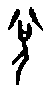

兌卦 兌為澤
兌，亨，利貞。初九，和兌吉。九二，孚兌，吉，悔亡。六三，來兌，凶。九四，商兌未寧，介疾有喜。九五，孚于剝，有厲。上六，引兌。
|
象曰：麗澤，兌。君子以朋友講習。（圖：小配） |
【卦名】
今本：兌 歸藏：兌 帛書：奪 清華簡：兌 海昏簡：說
《說文》：「兌，說也，从儿㕣聲。」段玉裁注：
說者今之悅字，其義見《易》。《大雅》「行道兌矣」，傳曰：「兌成蹊也。」「松柏斯兌」，傳曰：「兌，易直也。」此引伸之義。《老子》：「塞其兌，閉其門。」借為閱字，閱同穴。
依段注，所謂的「兌，說也」，為喜悅義。在《周易》中，十翼以及一般注解也是以「說」解釋兌，並將「說」解釋為現今的「悅」，因此以兌為喜悅，這也是傳統易學上的通說。至於「行道兌矣」的兌解釋為暢通，「松伯斯兌」的兌為變直，這都是引申義。但此二義，於其他文獻未常見到。
細究之，「說」同時兼具言說與喜悅的意思，甚至還有解釋、解脫之義。《說文》：「說，說釋也，从言兌。一曰談說。」說釋即脫釋，開解之義。
段玉裁注：
說釋即悦懌，說悦、釋懌皆古今字，許書無悦懌二字也。說釋者，開解之意，故爲喜悦。釆部曰：「釋，解也。」从言，兌聲。儿部曰：「兌，說也。」本《周易》，此從言兌會意，兌亦聲，弋雪切，十五部。一曰談說，此本無二義二音，疑後增此四字。
段玉裁以喜悅為開解義之引申，但否認談說之義，說當有談說之義才是。《釋名》：「述也，序述之也。」《廣雅》：「論也。」《玉篇》：「言也。」皆取言說義。
兌的甲骨文造字本義說法很多，但最常見者，如香港中文大學多功能字庫提出二說：一是象人張口說話，一是象喜悅。就其形構來看，其字下儿（人），中為一張大的口，上作八，為二氣發散，全字象言說或喜悅。也因此《周易》兌卦的八卦取象以兌為口。但另也有學者認為兌是閱或銳的本字。
以兌為悅者，如郭沫若，他認為「卜馬其先王兌从」，為卜問馬是否樂於跟從大王而去殉葬。「兌从」，即悅從，在殷商卜辭中多次出現，或釋讀為「兌比」，因甲骨文比與从形近。另有學者將「兌从」解釋為銳從，即急速跟從，如劉興隆即作此解。
劉興隆《新編甲骨文字典》則以說話為兌之本義：「象人張口說話，氣从口出之形。古文兌、說、悅、銳一字通用。」此以說為兌造字本義，後又衍生出以「兌」為偏旁的各種意義，如悅、銳、說。
徐中舒《甲骨文字典》舉卜辭兩例，分別作閱與銳。如「兌田」即閱田，為畋獵而檢閱師旅。「兌伐」即銳伐，通《詩．大明》的「肆伐」。李孝定亦大致持此說。
現今兌字用作兌換、兌現，似乎是唐朝之後才有的用法。在上古文獻中，未見此字義。至於《雜卦》所說的「兌見巽伏」，是以見解釋兌的卦義，與現今所用兌現義有別。
帛書兌卦作「奪」，奪通「敓」，《說文》：「敓，彊取也。《周書》曰：敓攘矯虔。」段玉裁注：「此是爭敓正字，後人假奪為敓，奪行而敓廢矣。」依帛書，兌當取敓義，為搶奪、剝奪之義。
若以《周易》經文來驗證，經文中的兌字僅見於兌卦，其字義暫且保留。但另一兌的衍生字「說」字，經文多次出現。說為後起字，其本字極可能作兌。說字在《周易》經文中作「脫」字用，如蒙九二用說桎梏、小畜九三輿說輻、革六二執之用黃牛之革莫之勝說。此有別於易傳中的說字用作喜悅的悅。以此推論，兌之本義當作脫，這也是《說文》說的「說釋」，即開脫、開釋。
由此看來，兌卦卦義似乎相當複雜而充滿內在矛盾，也可以引申到許多「兌」字邊的字，如喜悅的悅，與喜悅有些相反的剝奪（敓）、脫落的脫、尖銳的銳。而三畫卦的兌卦最常用的卦象除了喜悅之外，就是毀折，意思有些近似於敓、脫，或銳。
這樣的卦性也有點類似於兌卦所代表的秋季：既是代表豐收的喜悅，又是萬物開始凋敝與肅殺的一個季節。
【卦義】
對談、喜悅。
漢儒及十翼皆以「說」解釋兌，但後世易學家多將「說」當作「悅」字用，因此以兌為喜悅。當代易學家亦多採傳統看法，以兌為悅。但細究之，「說」同時兼具言說與喜悅的意思。高亨即認為，兌當取說義：
說既从言，當以談說為本義。《詩．氓》：「士之耽兮，猶可說也。女之耽兮，不可說也。」正用其本義。兌即說之古文，从人，从口，八象氣之分散，許云「㕣聲」，非也。《彖傳》等訓兌為說，當取談說之義，非喜悅之悅也。本卦兌字皆謂談說。和兌者，以溫和之度向人談說也。
《象》曰：「麗澤兌，君子以朋友講習。」此亦是以兌為談說之義。六畫的兌卦上下都是兌，麗為儷，兩人身影相隨之義。麗澤，為兩兌相隨。兌為說，重兌即上下彼此言說，朋友講習之象。兌卦即是兩人言語溝通相談。《說卦傳》的「說」亦取論述之義，無關喜悅。
《彖傳》：「說以先民，民忘其勞。」事先與人民做好言語上的溝通則人民就會任勞任怨，心悅誠服的為君效力。《雜卦傳》說「兌見而巽伏」，可理解為兌是面對面的言語溝通，而巽則是跪伏聽命，是上對下的命令。因此兌與巽代表了兩種不同的命令傳達方式。但一般的取象上，則以兌見為「出現」，巽伏為「隱伏」（不見）的意思。
得兌卦，利於守正，忌於偏邪。凡事可多用言語溝通，特別是當面的面對面交談，讓人因此而心悅誠服，避免用轉達、或者是下達命令式的方法。
傳統解讀兌卦六爻，以兌為悅，悅則有討好、取悅他人之義，其敝則易流於阿諛諂媚，因此特別強調貞、正，此卦辭所言之利貞。
若以兌為言說，那麼六爻似在講與人言說的溝通之道，卦辭亨利貞，言語溝通應當通於人心，而利於正。初九和兌吉，和氣地言說為吉。九二孚兌吉悔亡，以孚誠來言說，得吉之後可悔亡。六三來兌，為引來人之言說，或前來而言說於人。九四商兌即今所說之商量，上六引兌則是冗長的言說。
兌，亨，利貞。
《彖》曰：兌，說也。剛中而柔外，說以利貞，是以順乎天而應乎人。說以先民，民忘其勞，說以犯難，民忘其死，說之大，民勸矣哉。
《象》曰：麗澤，兌。君子以朋友講習。
面對面溝通以說服他，亨通，利於正定。
《彖傳》談的是「說服」溝通的重要性。《彖傳》言，在勞動人民之前先溝通說服之，人民可以忘記辛勞。說服他犯難，人民可以忘記生死。說服力量之大，人民可以因此就得到勉勵。
傳統注解以兌為悅，卦辭言，喜悅而有亨道，但其要亦在於守正。
朱熹：「兌，說也。一陰進乎二陽之上，喜之見乎外也。」「蓋說有亨道，而其妄說不可以不戒，故其占如此。」
初九，和兌，吉。
《象》曰：和兌之吉，行未疑也。
內心相應的談話，吉。
和兌類似於「相談甚歡」的意思，言兩人對話彼此相應，非常和諧，所以為吉。《象》曰：「和兌之吉，行未疑也。」有所相應的對談之所以吉，因為行為不會有任何懷疑。
傳統以和兌為和悅，蔡淵：「爻位皆剛，不比於柔，得說之正，和而不流者也，故吉。」來知德則以《中庸》「發而皆中節謂之和」註解，意指人之悅樂皆中節。
【字義】
和：《說文》：「相應也。」兌為說，談說、說服、解釋的意思。和兌，內心相應的對話、解釋。傳統將兌解釋為喜悅，那麼和兌就是和平、和諧的喜悅。中孚九二「鳴鶴在陰，其子和之」，即取相應之義。和亦有和樂之義，如《詩．常棣》「和樂且孺」，「和樂且湛」，和兌，即相談甚歡之義。
九二，孚兌，吉，悔亡。
《象》曰：孚兌之吉，信志也。
誠信交心的對話，吉，不會有後悔。
孚為信，誠信、信實、相感，也有交心之意。孚兌，彼此相信、交心的談話。《象》曰：「孚兌之吉，信志也。」所以吉，因為可以伸展志向。
傳統注解為有孚信而悅，乃能得吉而悔亡。
孔穎達：說而有信，則吉從之。然履失其位，有信而吉，乃得亡悔。
龔煥：九二陽剛得中，當說之時，以孚信為說者也。己以孚信為說，人不得而妄說之，所以吉也。
六三，來兌，凶。
《象》曰：來兌之凶，位不當也。
招來他人的言說，凶。或：前來遊說，凶。
易經中講「來」是指從外到內，六三往內就是指比鄰的九二。三為多凶之位，六三又以陰柔居陽剛之位，不當位，又乘九二，為逆，凶。兌為口舌，來兌，為招來口舌。
高亨以「來兌」與上六「引兌」為對舉義，來兌為言不及我而言說，引兌為言及於我而言說：來兌者，言未及我，而我自來說也。《論語．季氏篇》：「言未及之而言謂之躁。」《荀子．勸學篇》：「不問而告謂之傲。」又曰：「未可語言而言謂之傲。」《易》之來兌，即《論語》所謂躁，《荀子》所謂傲也。
傳統以兌為悅，來兌為反來求悅。如王弼：「以陰柔之質，履非其位，來求說者也。非正而求說，邪佞者也。」朱熹：「陰柔不中正，為兌之主。上无所應，而反來就二陽以求說，凶之道也。」
九四，商兌未寧，介疾有喜。
《象》曰：九四之喜，有慶也。
商量討論一直不定，大病將可痊癒。
或以介疾有喜為，與惡畫清界限則有喜。此言與人商討事情一直不順遂，無法有結果。若行事公正不偏，與不義畫清界線，則終有喜慶，表示商討可以有結果。反之，若有偏頗則有罪咎。
傳統以兌為悅，此言：商度自己之所悅，心有不安。若能介然守正則有喜。如朱熹：「商度所說，未能有定，然質本陽剛，故能介然守正，而疾惡柔邪也。如此則有喜矣。」
【字義】
商兌：《說文》：「商，从外知内也。」商為度量，引申為商量、商討、討論之義，亦作為商賈，商人之義。此當作商量解。兌，說服，解釋。商兌，與人商量及解說。
未寧：不平，未定，指商討不下，無法確定下來。傳統解釋認為悅是喜悅，此段以「喜悅」解釋語義奇怪而不通順。
介疾有喜：有多種解釋。一、介為大，如晉六二「受茲介福」，即解釋為大。「介疾」即大病。喜為痊癒。介疾有喜，大病會痊癒。《周易》喜多與疾對舉，可見其正解當為痊癒，如无妄九五「无妄之疾，勿藥有喜」，損六四「損其疾，使遄有喜」。二、介借為疥，介疾也是一種皮膚病，介疾有喜意指皮膚病將痊癒。三、「介疾」為與惡畫清界限。介原本是指隔界，間隔，界線，但也有節操、志節的意思。豫六二「介于石」，通解即取節操、耿介之義。疾，惡。傳統多作此解。如孔穎達：「防邪隔疾，宜其有喜，故曰介疾有喜。」程頤：「若剛介守正，疾遠邪惡，將得君以行道，福慶及物，為有喜也。」
九五，孚于剝，有厲。
《象》曰：孚于剝，位正當也。
相信於小人的剝爛之道，有危險。
王弼：「剝之為義，小人道長之謂。」朱熹：「剝，謂陰能剝陽者也。」
【字義】
孚于剝：剝在易學上為陽氣被陰氣所剝除，小人道長，君子道消的意思。《雜卦》：「剝，爛也。」所以剝道也是小人道長的剝爛之道。剝亦有僕義，輯本《歸藏》與清華簡剝卦作「僕」，海昏簡作「濮」，可為證。孚于僕，相信親近的僕人，此為危厲之道。
上六，引兌。
《象》曰：上六引兌，未光也。
冗長的言談。
爻辭未言吉凶，但《象傳》以「未光」形容之。言談冗長則吉凶難定，故不言吉凶。
上六已到兌的極點，理應退而居靜，不輕說於人。但仍力求說服，顯然不是很好的說服方式。
傳統以「悅」解釋此爻，王弼以引為牽引，有人牽引才得悅。朱熹則解釋為牽引二陽相與為悅。程頤以引為長，引兌為長悅，悅而不知止。
王弼：「以夫陰質，最處說後，靜退者也。故必見引，然後乃說也。」孔疏：「必須他人見引，然後乃說。」
朱熹：上六成說之主，以陰居說之極，引下二陽相與為說，而不能必其從也。故九五當戒，而此爻不言其吉凶。
程頤：兌為說，極則愈說。上六成說之主，居說之極，說不知已者也。故說既極矣，又引而長之。
【字義】
引：《說文》：「引，開弓也。」段玉裁注：「凡延長之偁，開導之偁，皆引申於此。《小雅．楚茨》、《大雅．召旻》毛傳皆曰：引，長也。」《爾雅》：引，永、延、長也。引，甲骨文畫的是拉弓之狀，開弓、張弓之義，至金文用作長、長久，此亦為引之引申義。程頤用此義：「說既極矣，又引而長之。」後來引又用作牽引、導引義，王弼：「故必見引，然後乃說也。」孔穎達：「必須他人見引，然後乃說。」萃六二：「引吉无咎。」
【彖傳】
《彖》曰：兌，說也。剛中而柔外，說以利貞，是以順乎天而應乎人。說以先民，民忘其勞，說以犯難，民忘其死，說之大，民勸矣哉。
兌，說也：兌為說的古字，有兩種意思，一是說話、說服的說，一是喜悅的悅。但「說」字在易經經文中多數解釋為脫。
剛中而柔外：九五剛中，上六柔外。
說以利貞，是以順乎天而應乎人：革卦《彖傳》也說「順乎天而應乎人」。
說以先民，民忘其勞。說以犯難，民忘其死。說之大，民勸矣哉：闡述說的作用。以說服方式讓人民前進，人民會忘記當中的辛勞。以說服方式讓人民犯難，人民會不怕死的去做。說服功效之大，人民會受到鼓勵。傳統說解釋為悅，亦通。